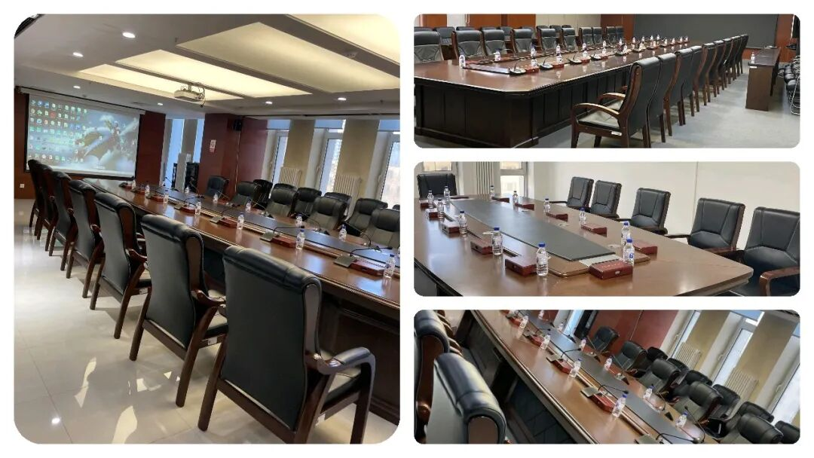
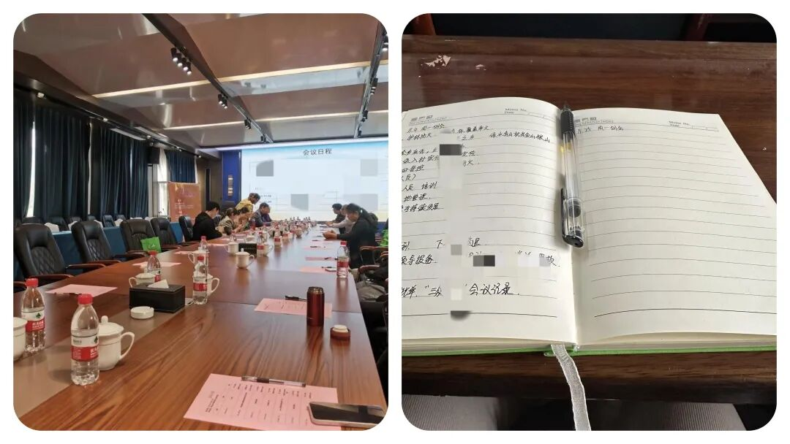
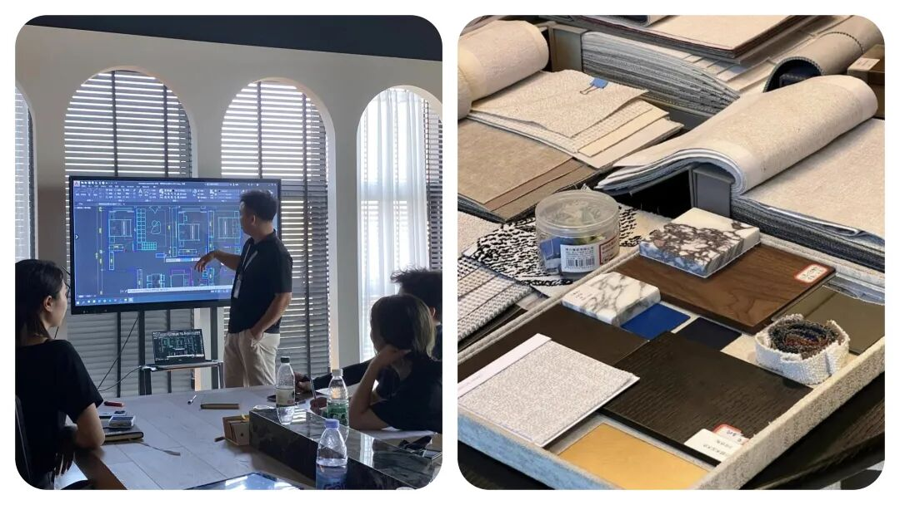
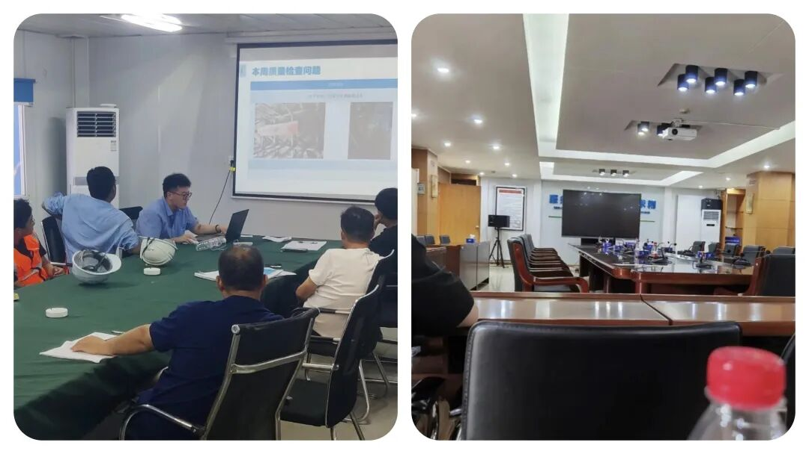
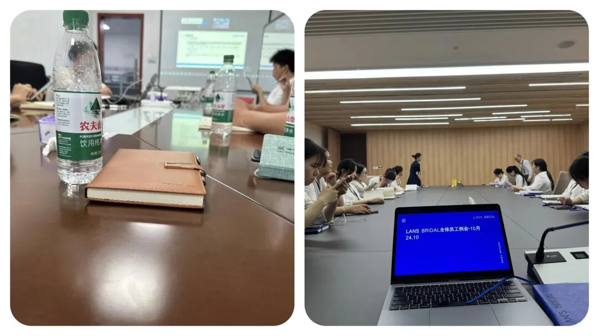

为什么单位里的人，都很反感开周例会？



越来越多上班族吐槽：周例会逐渐成了无效社交现场。
全员参会，信息五花八门，但其实只关乎那一小撮人的实际工作，剩下的人像看旁观秀，时不时还得做做样子发言；
明明能在群里两句话交代清楚，非要拉所有人进会议室耗时间；
流程简单粗暴，部门负责人报流水账，问题没有梳理，阻碍没讨论，最后缺谁配合、需要啥资源全无下文，散会之后啥也没解决，难题不断积压。




严格筛选参会人员，谁负责啥问题谁到场，其他人按需同步就好；
会议定时、不拖沓，内容优先讲关键节点，每人及时汇报问题+预案，摒弃情绪宣泄，坚持结果导向；
把会上定的内容简单闭环，快速转化成动作，不让会议变成半空中悬着的方案，能几十分钟说清楚的，绝不浪费。